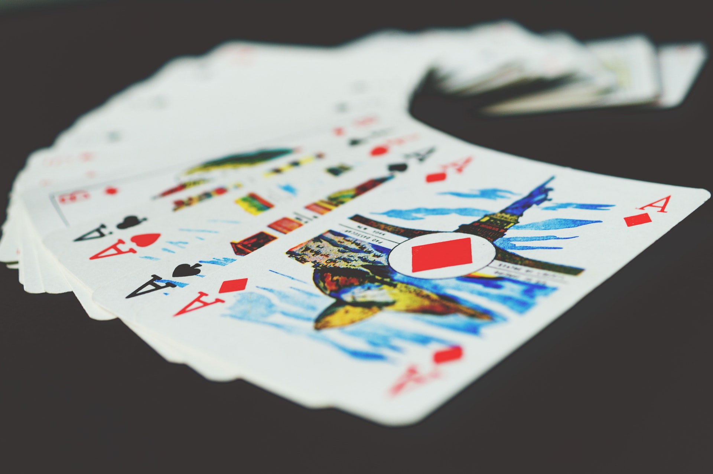

.jpg)



 Beginning a new teaching position where curriculum resources weren't easily accessible set me searching for ways to address the following: how do you help 6th graders deeply understand what visual-spatial intelligence is while they are beginnning to develop abstract reasoning skills? I drew on experience from being exposed to challenging games from working in a specialty toy store years earlier. I believe in the adage "Learn by doing". I believe that experience creates deep learning opportunities. I introduced the game of Set to my middle school learners as a way to show them one experience of drawing on visual-spatial strengths.
Beginning a new teaching position where curriculum resources weren't easily accessible set me searching for ways to address the following: how do you help 6th graders deeply understand what visual-spatial intelligence is while they are beginnning to develop abstract reasoning skills? I drew on experience from being exposed to challenging games from working in a specialty toy store years earlier. I believe in the adage "Learn by doing". I believe that experience creates deep learning opportunities. I introduced the game of Set to my middle school learners as a way to show them one experience of drawing on visual-spatial strengths.

It is amazing.. what can happen in a handful of years with a team of dedicated people who want to be innovative about making life and learning experiences meaningful!
After presenting at several conferences about Scholastica Tournaments, people were reaching out to me to learn more about how to host tournaments in their own schools. I thought it would be best to create a website to direct people to as a more efficient way to collaborate as compared to email correspondence. I took a class one of the local colleges to learn how to build Wordpress sites better. My teacher referenced the purpose of my site as a small business, and that got me thinking...
Since then I decided to invest in a 14 week General Assembly web development immersive bootcamp to learn more about how to build sites using a variety of coding languages and technologies. I fell in love with the process of building tools that address life processes with efficiency. I've been continuing to build my skills since then!
Block by Block
Gravity Maze

Troy
Utopia